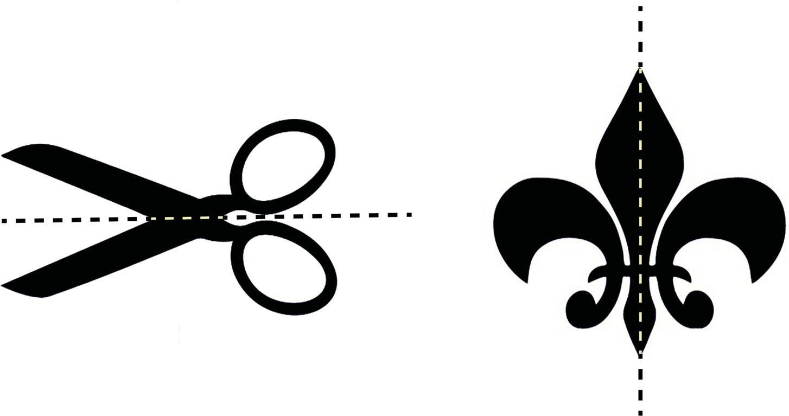

Exercise 1.3
1.Explain art manifestations in a garden.
2.Using any two insects or animals of your choice, describe their art manifestations.
Principles of fine art
Principles of fine art are sometimes known as principles of design or principles of art.
These are guidelines used by artists in the art composition process.
When successfully applied, the principles guarantee accuracy in all actions and decisions taken in the making of the final work of art.
Principles of art are guidelines that help artists focus on the process of creating a pleasant work of art.
These principles include balance, proportion, emphasis, variety, rhythm, movement, harmony and unity.
The details for each are as follows:
Principle of balance
The principle of balance is an equilibrium achieved through a good arrangement of visual elements such as line, texture, colour and form.
When balance is achieved in a work of art, it makes the work stable where it is placed.
In design, balance is categorised into three types, namely formal balance, informal balance and radial balance.
These types are explained as follows:
Formal balance
Formal balance is also called symmetrical balance which refers to an equilibrium achieved by arranging similar or identical elements on both sides of the axis.
An axis is an imaginary horizontal or vertical line assumed to be drawn at the centre of a design.
A formal balance has two sides of a composition with equal visual weight.
Figure 1.15 shows an example of formal balance.
